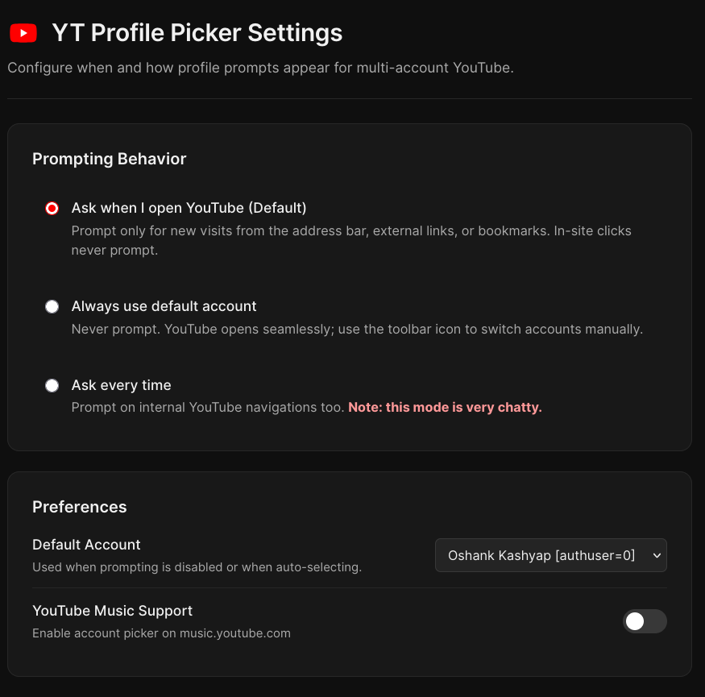
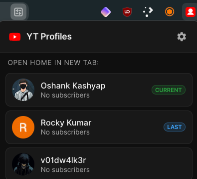

v1.1.3
Current release. Licensed under GPL-3.0.
Published and installable from Firefox Add-ons.
View releases on GitHubFirefox extension
A lightweight Firefox extension that lets you choose which signed-in Google account to use before opening YouTube.
Published on Firefox Add-ons.
Install the current release from Mozilla.
By default, a new visit to YouTube opens the picker when multiple signed-in accounts are detected.
Select a profile in the picker, or press its number from 1 to 9.
The requested YouTube page opens with the selected account.
Use 1–9 for the first nine profiles, arrow keys to move, and Enter or Space to select. Esc continues without switching.
The picker marks the last-used account, or the current account when it is not the last-used one. The last-used account receives initial focus.
Ask on new visits, include internal YouTube navigations, or disable prompts. By default, in-site navigation does not prompt.
Check profiles in the background every 10, 15, 20, 30, 45, or 60 minutes, or turn scheduled checks off. Refresh profiles directly from the picker.
Select an account from the toolbar popup to open YouTube’s home page in a new tab.
Enable or disable the account picker for YouTube Music in settings.
Skip account selection from the picker. When zero or one signed-in account is confirmed, YouTube opens without a choice screen.
Screenshot placeholders for the extension’s three screens.
Profile choices, account badges, and refresh controls.
Screenshot placeholder
Prompting behavior, Music support, and refresh preferences.
Screenshot placeholder
Account choices for opening YouTube home in a new tab.
Screenshot placeholderCurrent release. Licensed under GPL-3.0.
Published and installable from Firefox Add-ons.
View releases on GitHub